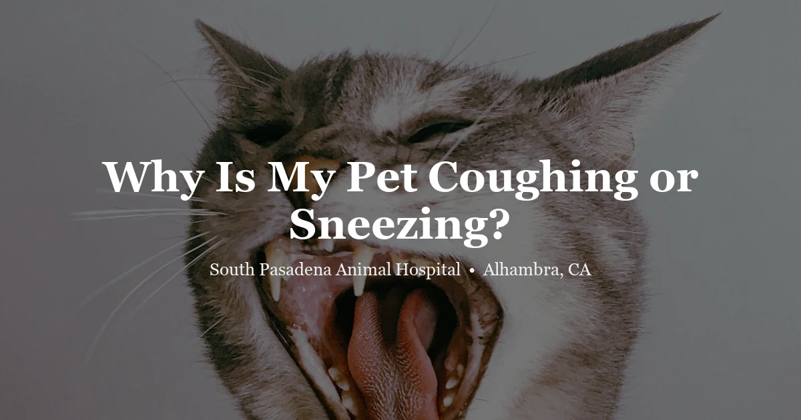

April 23, 2026 · 7 min read
Why Is My Pet Coughing or Sneezing? A Vet’s Guide to Respiratory Symptoms

Coughing dogs and sneezing cats — we see both constantly. And like most symptoms, the range behind them is wide. A single cough when a dog drinks too fast is nothing. A persistent dry cough in an older small-breed dog that's worse at night is a different conversation entirely. Same category of symptom, completely different clinical picture.
Here's how we think through it.
When it's probably nothing
A cat sneezes once while walking past the litter box. A dog coughs after gulping water too fast. One event, pet immediately returns to normal — usually fine. Worth a call when:
- The coughing or sneezing is happening multiple times per hour or continuously throughout the day
- It persists more than 24–48 hours without improving
- There's nasal or eye discharge, or anything coming from the mouth
- The pet seems uncomfortable, is off food, or less active than usual
- Any change in breathing pattern at rest — labored, fast, open-mouth
Why dogs cough — and what it tells us
Kennel cough
The most common sudden-onset cough we see. Bordetella bronchiseptica and canine parainfluenza are the main pathogens — it spreads through shared air and surfaces, so dog parks, groomers, boarding, daycare. If your dog was at any of these in the past week and is now coughing, that's the likely source.
The sound gets to you: a harsh, repetitive honk that makes owners certain something is lodged in the throat. Most dogs keep eating and playing through it, which is reassuring. Healthy vaccinated adults usually clear it in 1–2 weeks with treatment. Puppies, seniors, and immunocompromised dogs can develop pneumonia from it — those should be seen sooner.
Heart disease — the cough that gets mistaken for everything else
An older small-breed dog with a cough that's worse at night and at rest: that's heart disease until proven otherwise. Mitral valve disease causes the heart to enlarge progressively, and the enlarged heart eventually compresses the bronchus enough to trigger a cough. Cavalier King Charles Spaniels, Miniature Schnauzers, Dachshunds — these breeds especially. A Cavalier over five with a new chronic cough should get a chest X-ray and cardiac evaluation, not just kennel cough treatment.
Collapsing trachea
The cartilage rings that hold the trachea open weaken, and the airway collapses on inhalation. That produces the "goose honk" cough — triggered by excitement, pulling on the collar, or exertion. Yorkies, Chihuahuas, Pomeranians. We can't reverse the structural change, but management works well: weight control, harness instead of collar, medications to reduce the cough reflex and airway inflammation. Most dogs live comfortably with this for years once it's properly managed.
Canine Influenza and Pneumonia
Canine influenza (H3N2 and H3N8) causes a wet productive cough alongside fever and lethargy. Pneumonia — from influenza, bacteria, or aspiration — presents with rapid breathing, reduced appetite, and a dog who looks genuinely unwell, not just coughing. These need prompt care.
Heartworm
Lower risk in Southern California than in humid southeastern states, but not zero — the mosquitoes are here. Established heartworm infection causes a chronic soft cough, exercise intolerance, and eventually heart failure. Annual testing and year-round preventive are still recommended for dogs in the LA area.
Cats: sneezing is common, coughing is serious
Most sneezing in cats is upper respiratory infection. Herpesvirus and calicivirus together account for the vast majority of cases. Sneezing with watery or thick nasal discharge, eye discharge, sometimes mouth ulcers (calicivirus) or corneal ulcers (herpesvirus). Herpesvirus is lifelong — it hides in the nervous system and flares with stress. A cat that came from a shelter or a multi-cat household and keeps having sneezing episodes probably carries it. Stress management genuinely reduces flare frequency. This is not a vague piece of advice; it's the main management tool we have for a virus we can't eliminate.
Coughing in cats is different and less common — which is exactly why it matters more when it happens. Feline asthma is usually the first thing we think about. Allergic bronchitis triggered by inhaled allergens, which in the Los Angeles area includes wildfire smoke, elevated particulates, and pollen. The classic presentation: the cat crouches low, neck extended forward, struggling to exhale. If you see that posture — that's not a hairball. That's an asthma attack. Come in. Don't wait to see if it resolves.
Go Now — These Are Emergencies
- A cat breathing through its mouth at rest — cats almost never do this unless in respiratory distress
- Blue, gray, or white gums — oxygen deprivation
- Labored breathing with visible belly effort or chest heaving
- A pet who can't get comfortable and keeps repositioning to breathe
- Collapse or extreme weakness alongside coughing in a dog
- Fluid or blood from the nose or mouth
Respiratory Disease in Exotic Pets
Rabbits are obligate nasal breathers — they cannot breathe through their mouths. A rabbit breathing through its mouth is in respiratory distress. That's an emergency. The most common upper respiratory infection in rabbits is "snuffles" — Pasteurella multocida. Nasal discharge, sneezing, wet fur on the forepaws from wiping. Pasteurella can spread internally. We can't cure chronic snuffles, but we can manage it.
Guinea pigs are highly susceptible to respiratory infections — and Bordetella bronchiseptica, the kennel cough organism, can cause fatal pneumonia in guinea pigs. Keep guinea pigs away from dogs and rabbits who may carry it without showing symptoms. Signs in guinea pigs: labored breathing, crackling sounds, lethargy, reduced appetite. They deteriorate fast. Seen urgently.
Birds have air sacs, not simple lungs, which means respiratory disease doesn't look the same as it does in mammals — and it's much harder to detect early. By the time signs are obvious — tail bobbing with each breath, open-beak breathing, wheezing, clicking sounds — the bird is often severely compromised. Aspergillus (a fungal infection), Chlamydiosis, and bacterial infections are common causes. Any bird showing respiratory signs needs a vet familiar with avian medicine immediately.
Snakes and lizards develop respiratory infections that cause wheezing, mucus in the mouth and nostrils, or open-mouth breathing. In snakes, a respiratory infection can look like lethargy or refusal to eat before the breathing changes become obvious. Open-mouth breathing in any reptile is a sign that needs a vet visit — husbandry changes alone won't fix an active infection.
Frequently Asked Questions
My dog coughed a few times but seems fine — should I worry?
Probably not, if it's isolated and not recurring. One or two coughs in an otherwise active, eating dog are usually irritation. If it comes back, becomes frequent, or the dog seems off in any other way, call us.
Can a dog catch kennel cough from dog parks or groomers?
Yes. It spreads through airborne droplets and shared surfaces. Dog parks, boarding, daycare, groomers, and vet waiting rooms are all exposure environments. The Bordetella vaccine reduces severity and transmission significantly — discuss the schedule with us based on your dog's lifestyle.
Why is my cat sneezing so much?
Most commonly an upper respiratory infection — herpesvirus or calicivirus. A cat with herpesvirus will likely have recurrent flare-ups for life, especially during stress. Other causes include Chlamydia, nasal polyps, and in older cats, nasal tumors. A vet exam and sometimes diagnostics help identify the specific cause.
Is reverse sneezing in dogs dangerous?
Usually no — it's a loud, snorting rapid inhalation, especially common in small and brachycephalic breeds. Most episodes resolve in 30–60 seconds. Frequent or prolonged episodes, or new onset in an older dog, is worth mentioning at your next visit to rule out a nasal mass.
What causes coughing in cats?
Less common than sneezing, which makes it more significant. Asthma is our first thought in a coughing cat. Heartworm infection, upper respiratory disease, and pleural effusion are also possible. A cat in that low-crouch posture with neck extended struggling to breathe — come in immediately. Call us or come right away.